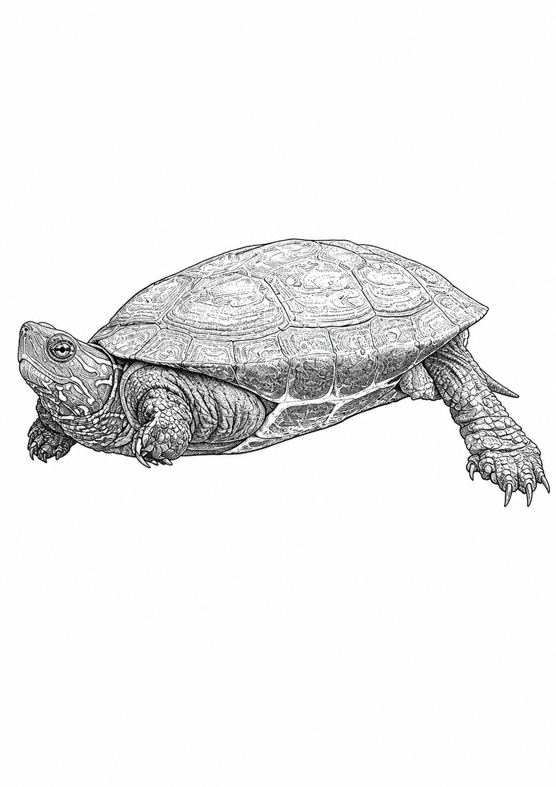
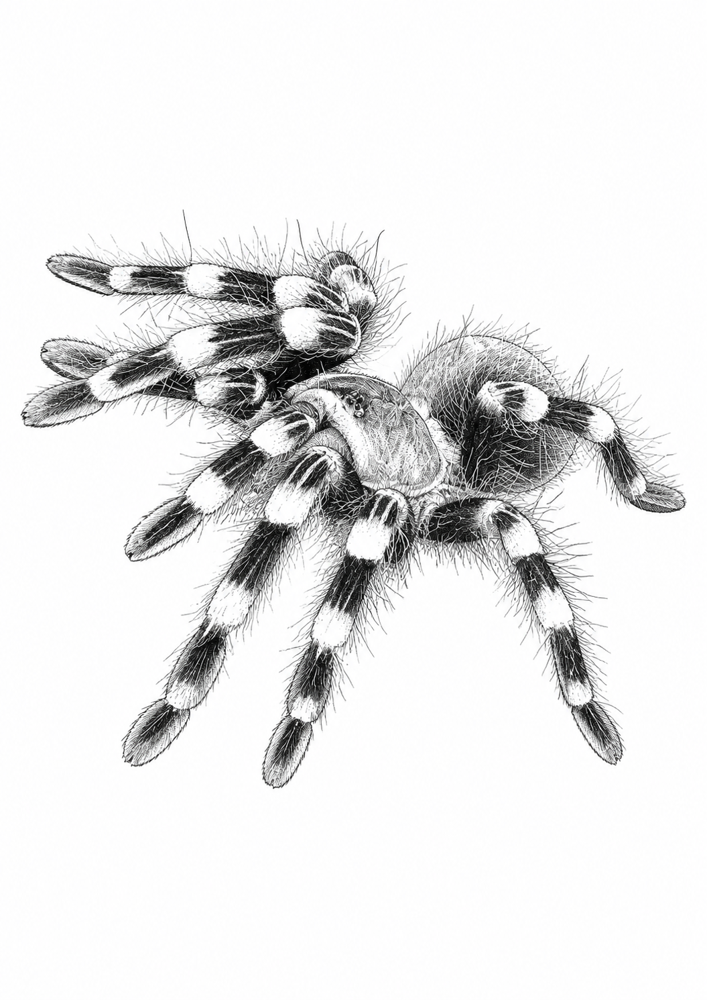

Fugleedderkopp · hunn
Siuzi
Theraphosa apophysis
Se etter den kraftige kroppen, de hårete beina og hvordan hun sitter ved skjulestedet.
Gratis · A4 · klare for utskrift
Hvert ark er laget med et fotografi av det virkelige dyret som utgangspunkt. Du kan følge fargene i originalbildet, eller finne på ditt eget uttrykk.

Fire dyr å begynne med
Trykk på «Skriv ut» for å åpne nettleserens utskriftsvindu. Velg A4, stående format og 100 % størrelse for best resultat.
Theraphosa apophysis
Se etter den kraftige kroppen, de hårete beina og hvordan hun sitter ved skjulestedet.
Mauremys reevesii
Finn stripene ved hodet, klørne og de tydelige feltene i ryggskjoldet.

Acanthoscurria geniculata
De lyse båndene ved beinleddene gjør Alma lett å kjenne igjen.

Chromatopelma cyaneopubescens
Ruby har blå bein, grønnlig ryggskjold, oransje bakkropp og mye silke.